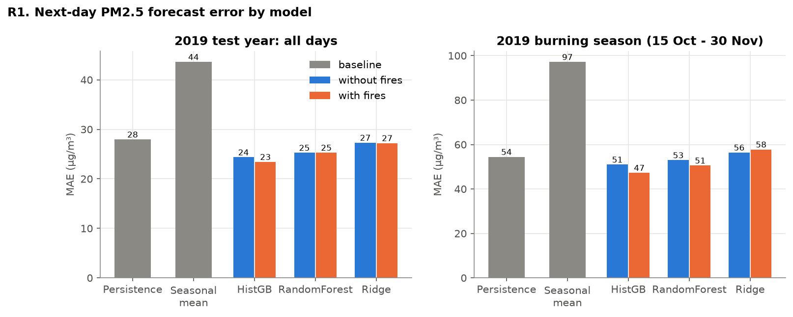
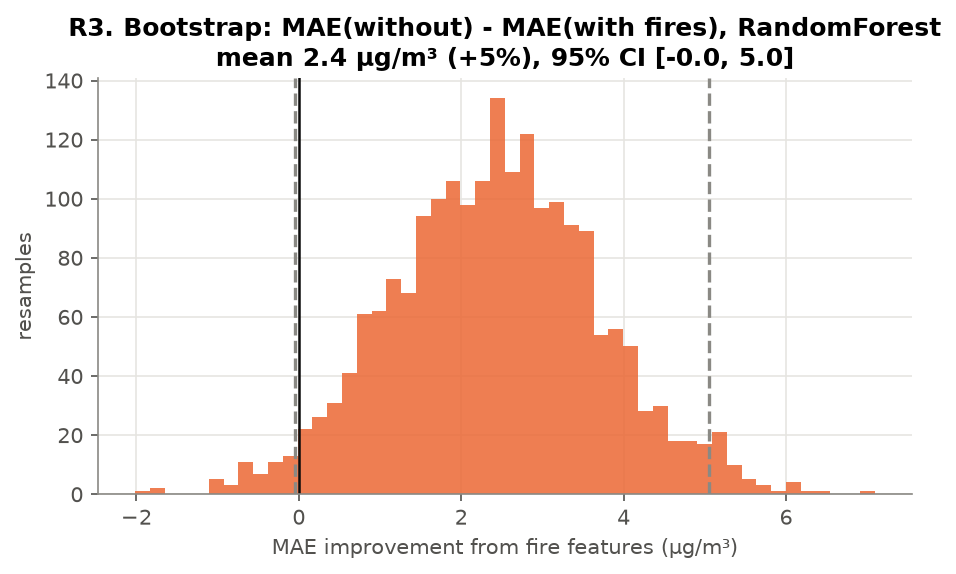
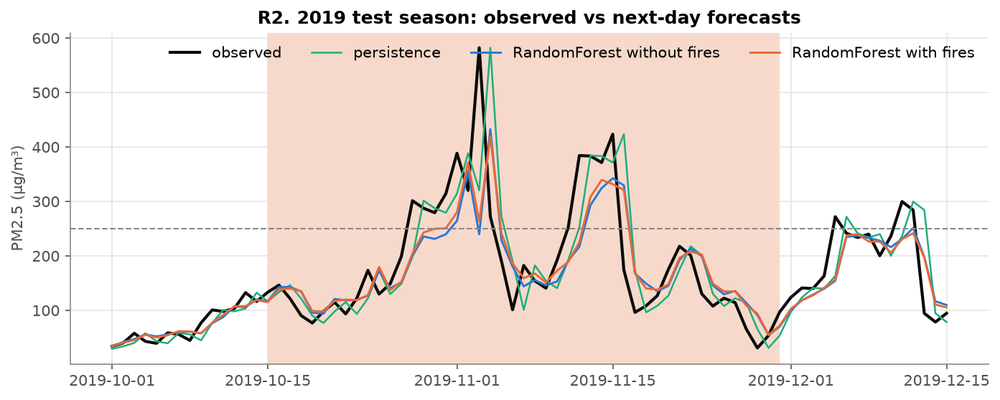
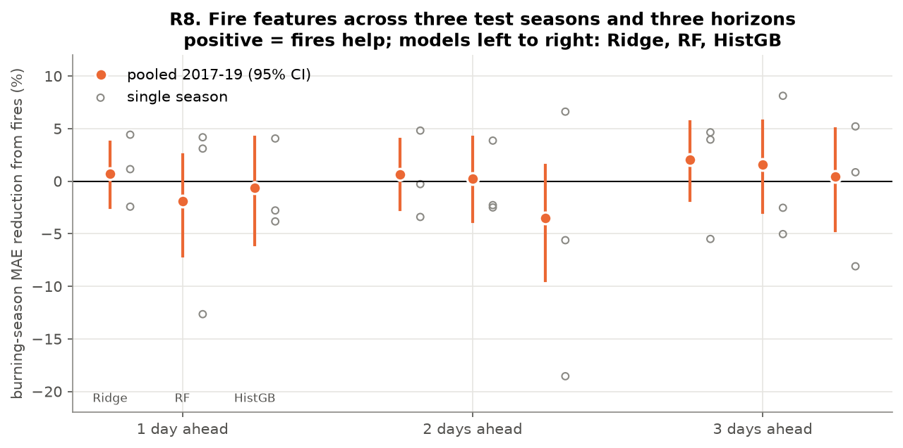
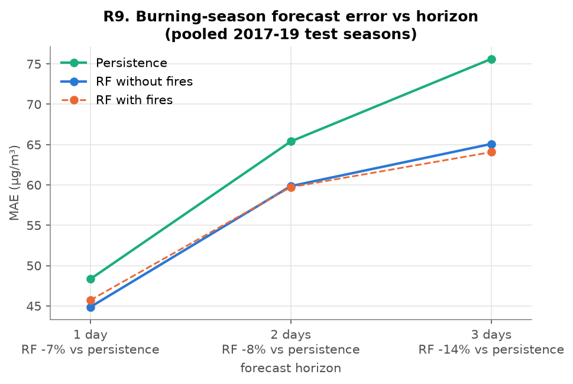
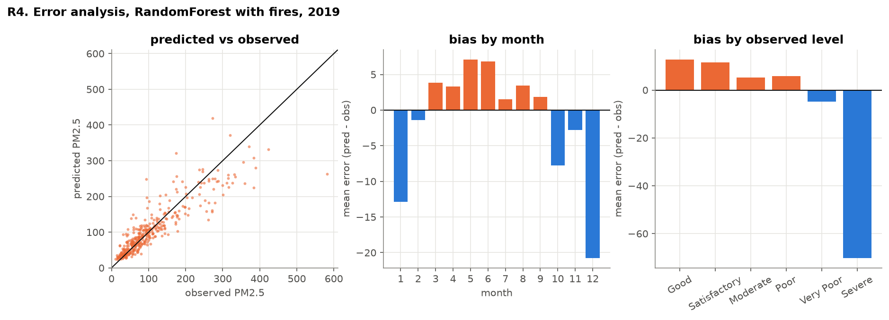
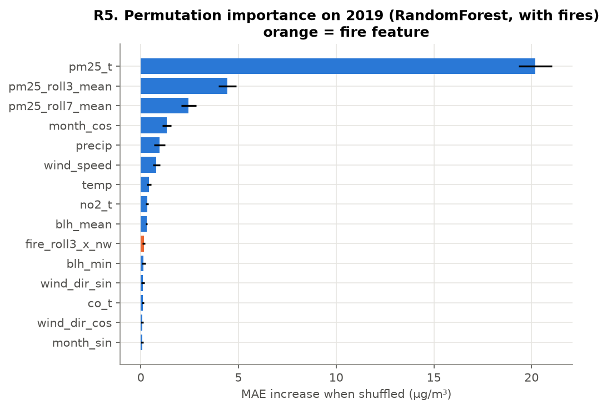
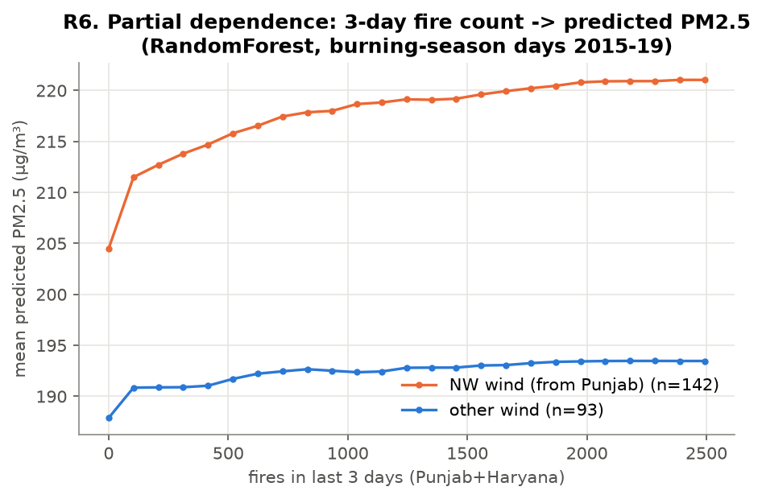

Do Punjab–Haryana farm fires help predict Delhi's smog?
IDSE Part A data science project · November 2026
Delhi's PM2.5 regularly exceeds 250 µg/m³ ("Severe") in October–December, more than four times India's 24-hour standard of 60. Crop-residue burning in Punjab and Haryana is blamed every year, but its contribution is disputed: the same season brings cold, calm air, a shallow mixing layer, Diwali fireworks, traffic and heating. Authorities act on next-day forecasts (the GRAP restrictions are triggered by AQI levels), so the practical question is predictive:
Does adding satellite-detected farm-fire activity in Punjab and Haryana improve next-day prediction of Delhi's PM2.5 beyond what today's pollution and weather already tell us, and by how much during the burning season?
The test is an ablation. The same model is trained with and without fire features, and the two are compared on a held-out year. Three measurable goals were fixed in advance, all judged on the 2019 test year:
| ID | Goal | Success criterion |
|---|---|---|
| G1 | Beat the naive forecast | Best model MAE < persistence MAE, overall and in the burning season |
| G2 | Quantify the value of fire data | Burning-season (15 Oct – 30 Nov) MAE ≥ 10% lower with fires; paired-bootstrap 95% CI excluding 0 |
| G3 | Useful for alerts | Recall ≥ 0.7 on Severe days (PM2.5 > 250), with precision reported |
Summary of findings. ML forecasts beat persistence by 7–14% in the burning season, with the margin growing from 1-day to 3-day forecasts. In the pre-registered single-season test (2019), fire features appeared to cut burning-season error by 4.5–7%. A rolling-origin robustness check over three seasons and three horizons shows that this gain does not generalise: pooled over 141 burning-season days, every fire effect lies between −3.5% and +2.1%, with all 95% CIs including zero. Once Delhi's own pollution and weather are known, farm-fire counts add no measurable forecasting skill.
| Source | What | Size used | Role |
|---|---|---|---|
CPCB, via Kaggle rohanrao/air-quality-data-in-india (city_day.csv, CC0) |
Daily city-average pollutants | 2,009 Delhi days, 1 Jan 2015 – 1 Jul 2020 | Target and persistence features |
| NASA FIRMS MODIS C6.1, India yearly files | One row per detected fire pixel (lat, lon, time, confidence, FRP) | 482,420 detections; 119,987 in Punjab+Haryana | Fire features (the tested group) |
| Open-Meteo archive (ERA5 reanalysis), 28.61 N 77.21 E | Daily temperature, humidity, max wind, dominant wind direction, rain; hourly boundary-layer height | 2,009 days, 48k hours | Weather confounders |
| Issue | Action | Reason |
|---|---|---|
| Duplicate dates | Checked and asserted: none | Lags require one row per day |
| Missing calendar days | Reindexed to a full daily calendar (none were missing) | A lag must mean "yesterday", not "previous row" |
| Missing PM2.5 (2 days, 0.1%) | Target never imputed; those rows dropped (2,006 modelling rows remain) | Imputing the target would invent ground truth |
| Feature gaps (PM10 3.8%, SO2/O3 ≈5%) | Forward-fill, max 3 days, on feature copies; remaining NaN → median imputer inside the Pipeline (HGB handles NaN natively) | Uses only past values; interpolation would leak the future |
| Columns > 40% missing | Drop rule (none triggered; Xylene 39% is unused) | Too sparse to be reliable |
| Impossible values (negative, PM > 1,000) | Rule sets them to NaN (0 found) | Sensor errors |
| Extreme but real values (up to 685 µg/m³) | Kept | These smog episodes are exactly what we want to predict |
| Non-vegetation / low-confidence fire pixels | Keep type == 0 and confidence ≥ 30 (439,543 of 482,420) |
Industrial hotspots and false alarms are not crop fires |
| Region | Bounding box 27.6–32.6 N, 73.8–77.6 E (Figure 4) | Captures the burning belt; approximate (limitation) |
| Time zone | UTC acquisition time → IST date (343 detections change day) | Daily features must align with Delhi's calendar |
| Days without detections | 0, not NaN (582 days) | No fire detected is real information |
| Weather gaps | Asserted none | ERA5 is complete |
Figure numbers refer to reports/figures/ and notebooks/01_eda.ipynb, where each plot has a fuller discussion.
src/features.py)Row t holds what is known by the end of day t. The target is PM2.5 on day t+1.
| Group | Features |
|---|---|
| Persistence | PM2.5 today, lags 1–3, 3- and 7-day means; PM10, NO2, CO today |
| Weather (day t) | wind speed, wind direction (sin/cos), NW-wind flag (270–360°), temperature, humidity, rain, boundary-layer height mean and min |
| Calendar (of day t+1, known in advance) | month (sin/cos), weekday, Diwali ± 2 days, burning-season flag |
| Fires (tested) | count today, lags 1–3, 3- and 7-day sums, log counts, FRP sum, log 3-day sum × NW wind |
We use observed day-t weather, not day-t+1 weather, which would amount to assuming a perfect weather forecast.
2015 ── 2016 ── 2017 │ 2018 │ 2019 │ 2020 H1
TRAIN (TimeSeriesSplit 5-fold CV) │ VAL │ TEST │ stress test
└── refit on 2015–2018 ──┘ (scored once)
A random split would leak, because neighbouring days are almost identical. Rows are assigned by the date predicted.
Imputation and scaling are inside sklearn Pipelines, so they are fitted on training folds only.
tests/test_features.py scrambles every value after a cut-off day and asserts that no feature on or before the cut-off changes.
It also checks that the target does change, so the test is shown to catch leakage.
| Model | Why | Tuning (GridSearchCV, TimeSeriesSplit(5), MAE) |
|---|---|---|
| B0 Persistence | Honest baseline; PM2.5 is highly autocorrelated | none |
| B1 Seasonal mean | What the calendar alone explains | none |
| M1 Ridge | Interpretable; L2 handles collinear lags | α ∈ {0.1, 1, 10, 100} → 100 |
| M2 Random Forest | Non-linear effects and interactions (fire × wind) | depth, leaf size, max_features |
| M3 HistGradientBoosting | Strong on tabular data, native NaN handling | learning rate, depth, iterations |
M1–M3 are fitted on log(1 + PM2.5), because the target is right-skewed and errors grow with the level. Predictions are back-transformed, and all metrics are in µg/m³. MAE is the main metric: it is in physical units, and it is robust to a few extreme days. RMSE (which penalises big misses) and R² are also reported.
Selection rule (fixed in advance): choose the model family with the lowest mean validation MAE across its two variants, so the choice does not favour either side of the fire comparison. Random Forest scored 20.60, HistGB 20.67 and Ridge 22.97, so Random Forest was selected.
Table 1. 2019 test MAE (µg/m³), n = 365 overall and 47 burning-season days
| Model | Variant | MAE overall | MAE burning season | R² overall |
|---|---|---|---|---|
| Persistence | – | 27.95 | 54.45 | 0.71 |
| Seasonal mean | – | 43.61 | 97.17 | 0.48 |
| Ridge | no fires | 27.31 | 56.43 | 0.72 |
| Ridge | with fires | 27.22 | 57.80 | 0.72 |
| Random Forest (selected) | no fires | 25.28 | 52.97 | 0.77 |
| Random Forest (selected) | with fires | 25.30 | 50.57 | 0.78 |
| HistGB | no fires | 24.36 | 50.99 | 0.78 |
| HistGB | with fires | 23.43 | 47.30 | 0.79 |

G1 — met. The selected model beats persistence by 9.5% overall and 7.1% in the burning season. The seasonal mean is far worse, so yesterday's air matters much more than the calendar. Ridge does not beat persistence in the burning season. HistGB scored best on test, but we keep the model chosen on validation rather than re-selecting after seeing the test result.
Table 2. G2: burning-season gain from fire features (MAE without − MAE with; positive means fires help)
| Model | Gain (µg/m³) | Gain % | 95% CI, paired bootstrap | 95% CI, 7-day block bootstrap |
|---|---|---|---|---|
| Ridge | −1.37 | −2.4% | [−4.51, 1.94] | [−3.96, 0.96] |
| Random Forest | 2.40 | 4.5% | [−0.05, 5.05] | [0.55, 5.32] |
| HistGB | 3.69 | 7.2% | [0.64, 6.89] | [−0.30, 8.35] |

G2 — not met. The selected model gains 4.5%, below the 10% target, and its pre-specified CI just touches 0. Both tree models gain 4.5–7.2% on 2019. Each reaches a CI excluding 0 under one of the two bootstraps, never both. Ridge gains nothing. On its own this looks like a small positive effect. But the 2018 validation year already disagreed (HistGB was worse with fires: 37.6 vs 36.6), and 47 days is a small sample. Section 6.1 tests whether the 2019 result generalises.

Table 3. G3: Severe-day alerts (34 Severe days in 2019)
| Rule | Recall | Precision | Caught / missed / false alarms |
|---|---|---|---|
| Persistence (today > 250) | 0.65 | 0.63 | 22 / 12 / 13 |
| RF with fires, forecast > 250 | 0.41 | 0.74 | 14 / 20 / 5 |
| RF with fires, forecast > 225 (threshold chosen on 2018) | 0.74 | 0.66 | 25 / 9 / 13 |
| RF with fires, "Very Poor or worse" (> 120) | 0.84 | 0.87 | 90 / 17 / 13 |
G3 — not met as specified, met with a calibrated threshold. The regression shrinks extremes towards the mean, so a forecast of 250 is rarely reached. Choosing the alert threshold on the validation year to give 70% recall gives 225. On 2019 that gives recall 0.74 and precision 0.66, better than persistence on both. This calibrated rule was added after the first test evaluation; it uses validation data only, but we flag it as a secondary result.
The primary test uses one season. To check whether its result generalises, src/robustness.py runs a
rolling-origin evaluation. Each burning season 2017, 2018 and 2019 is the test set in turn, with the model
re-tuned (TimeSeriesSplit CV) and trained only on earlier years. Pooling gives 141 burning-season test days. The whole
experiment is repeated for forecasts 1, 2 and 3 days ahead: features still stop at day t, and only the target
moves. If fires carried real signal, it should appear across seasons, and more strongly at longer horizons where
today's PM2.5 is less informative. This analysis was added after the primary result.
Table 4. Pooled burning-season gain from fire features (2017–2019, 141 days)
| Horizon | Model | MAE no fires | MAE with fires | Gain | 95% CI (µg/m³) | Gain 2017 / 2018 / 2019 |
|---|---|---|---|---|---|---|
| 1 day | Ridge | 49.5 | 49.1 | +0.7% | [−1.2, 1.9] | +1.1 / +4.4 / −2.4% |
| 1 day | Random Forest | 44.9 | 45.7 | −1.9% | [−3.0, 1.2] | −12.7 / +3.1 / +4.2% |
| 1 day | HistGB | 45.5 | 45.8 | −0.6% | [−2.6, 2.0] | −3.8 / −2.8 / +4.1% |
| 2 days | Ridge | 60.3 | 59.9 | +0.7% | [−1.6, 2.4] | +4.8 / −3.4 / −0.3% |
| 2 days | Random Forest | 59.9 | 59.7 | +0.2% | [−2.2, 2.6] | −2.3 / −2.5 / +3.9% |
| 2 days | HistGB | 59.8 | 61.9 | −3.5% | [−5.3, 0.9] | −5.6 / −18.6 / +6.6% |
| 3 days | Ridge | 63.4 | 62.1 | +2.1% | [−1.2, 3.6] | +4.6 / −5.5 / +4.0% |
| 3 days | Random Forest | 65.1 | 64.1 | +1.6% | [−1.8, 3.9] | −2.5 / −5.0 / +8.1% |
| 3 days | HistGB | 64.9 | 64.6 | +0.5% | [−3.0, 3.3] | +0.9 / −8.1 / +5.2% |
Persistence burning-season MAE: 48.3 (1 day), 65.4 (2 days), 75.6 (3 days).

reports/metrics/robustness_summary.json).


Permutation importance (Fig R5): today's PM2.5 dominates (+20 µg/m³ when shuffled), followed by the 3- and 7-day means, season, rain and wind. Individual fire features look negligible because the ten of them stand in for each other. Shuffling the whole fire group at once raises burning-season MAE by 3.2 µg/m³, which agrees with the ablation (2.4).

Partial dependence (Fig R6): the forecast rises with recent fire counts, by about +17 µg/m³ with NW wind against
+6 with other winds. The pattern is physically plausible (transport from Punjab), but Section 6.1 shows it does not
translate into a reliable forecast improvement. It is the model's internal response, not evidence of an effect. Ridge (Fig R7) gives log_fire_roll3_sum the 7th-largest standardised coefficient.
Stress test (2020 H1, COVID lockdown, no burning season): the tree models beat persistence (MAE 17.1–17.3 vs 19.7), and the with/without-fires variants are identical, as they should be.
The ML models beat persistence (G1), and their advantage grows with the forecast horizon, from 7% at 1 day to 14% at 3 days in the burning season (Fig R9). On the pre-registered single test season (2019), fire features appeared to help by 4.5–7% (G2 not met). A rolling-origin check across three seasons and three horizons shows that this does not generalise: pooled gains range from −3.5% to +2.1%, and every CI includes zero (Table 4). For Severe-day alerts, a validation-calibrated threshold reaches 74% recall at 66% precision (Table 3).
Answer: once Delhi's own PM2.5 and weather are known, satellite fire counts from Punjab and Haryana add no measurable skill to 1–3-day PM2.5 forecasts. This does not mean the fires are harmless. It means their effect is already visible in the variables a forecaster has, so counting fires adds nothing new. The project also shows a methodological point: a single-season test produced a plausible 5–7% "effect" that disappeared when tested on more seasons.
Next steps: more seasons (CPCB 2021–2025) to tighten the CIs; VIIRS 375 m fires (better at small and evening fires); HYSPLIT back-trajectories to count only fires whose air actually reaches Delhi; forecast rather than observed weather; extreme-aware losses to reduce the shrinkage on Severe days.